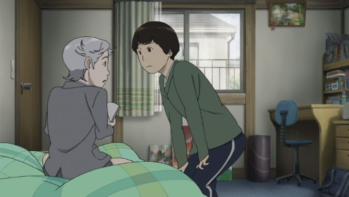

"Colorful" is the name of a dirty ova anime series, but that's not what I'm reviewing here. This film is a much deeper, mature story, so be careful which one you look up. And it's a special film, yet modest and subtle. A strange story indeed: it starts with a first-person perspective of a man who had just died and found himself in the afterlife. Before he goes any further, he is told by a young boy in a suit that he had been chosen to repent for his sins by living out the life of another boy, Makoto, who had died committing suicide. The result is that the family never realized that Makoto died, despite that fact that Makoto now has no memories of this life or his last. As part of his repentance, he must figure out why the original Makoto committed suicide, and make up somehow for what he did. Lost and alone, he does this, and we see his evolution until the end of the film. It seems like a really deep, interesting story, and much more mature than any other anime I've seen. It is also realistic: no one has any special powers, and most of the characters are actually realistic (which you almost never see in any film now-a-days). And its relatable to boot: the experiences and relationships and emotions that Makoto goes through are probably common to many people, or at least understandable. This does become the film's biggest weakness, though: it's really slow, and not much happens in it. It feels like a slice-of-life story, except that the story feels like a real life vignette, as well as being just slightly too preachy about the value of life. While it is somewhat boring, the setup and surprise ending are still worth it, and the themes make this a must watch. Visually, the film looks good, if not more than just "good." Character designs are simple and uninteresting, to enhance the realistic setting. The backgrounds are impressive, however. Look closely, and the backgrounds appear to mix both paintings and real images, and it's hard to tell the difference. A real achievement. One thing that bothered me was that this could have very easily been done with live-action instead of animation.  Audio is fair, with a couple nice vocal songs and moving background music. English dub is a little off, but emotions feel right somehow. I don't think I can say "Colorful" is one of my favorite anime films, but I think its safe to say it was the best anime film of its year... maybe not the best, but the most "important." Regardless, just watch it, you owe it to yourself to see it once.
- "Ani" More reviews can be found at : https://2danicritic.github.io/ Previous review: review_Coicent_&_Five_Numbers Next review: review_Corpse_Princess